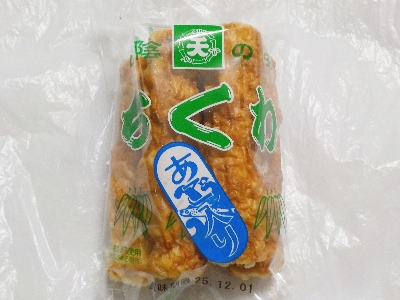
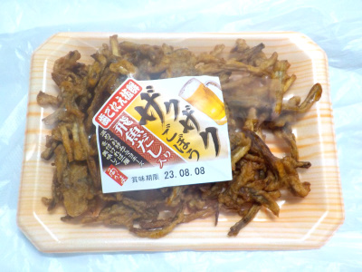
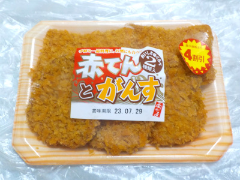
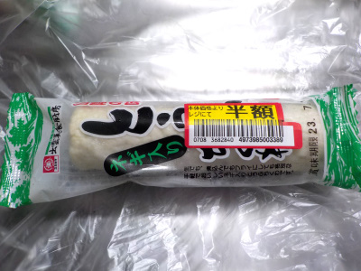
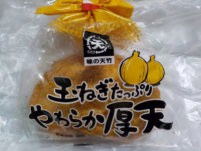
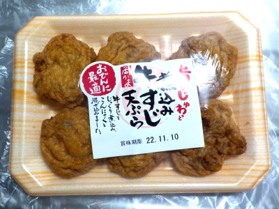
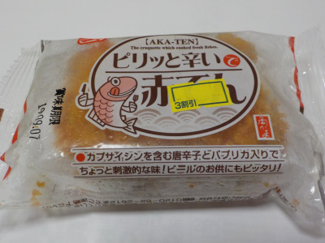
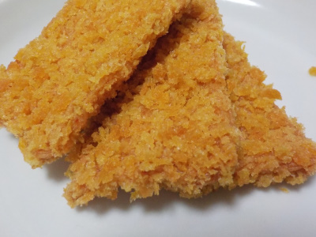
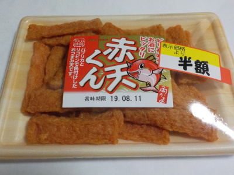

角かまぼこのあご入りちくわ。
更新日 : 2025/11/28

見た目は普通に竹輪ですね。
寒い時期なので暖かいのがいいなと、竹輪を縦半分に切ってフライパンで焼いて食べました。
焼いて水分が減った分、コゲ感と魚のアゴ感が強くなった気がしました。濃い味は美味しいな。
次もまた焼いて食べようと思いました。
島根県松江市東出雲町錦浜583-21
更新日 : 2025/11/28

見た目は普通に竹輪ですね。
寒い時期なので暖かいのがいいなと、竹輪を縦半分に切ってフライパンで焼いて食べました。
焼いて水分が減った分、コゲ感と魚のアゴ感が強くなった気がしました。濃い味は美味しいな。
次もまた焼いて食べようと思いました。
更新日 : 2023/08/07

ちょっとカマボコ風なごぼうの天ぷらです。
パッケージにあるように噛み応えがありました。噛んでるうちにゴボウと魚の味がジワジワ出てきて美味しかったです。
これはいい商品ですね。いろいろ使えそう。
更新日 : 2023/07/28

赤てん2枚とがんすが3枚が入ってました。がんすの方が多いってことはがんすの方が人気があるのかな？
両方ともピリッと辛いお魚コロッケですが、味がだいぶ違っていました。食べ比べ出来るのはいいですね。
どちらかというと私は「がんす」の方が魚味が強くて好きだと思いました。
更新日 : 2023/07/09

とうふちくわって食べたことないかも？半額なので買って食べてみました。
豆腐と竹輪の中間的な商品かと思っていたんですが、味は竹輪でした。
やわらかい食感でマイルドな味の竹輪。これは食べやすくていいですね。夏は冷ややっこみたいな感じで、夏はとうふちくわでもいいかなと思いました。
更新日 : 2022/12/17

玉ねぎたっぷりの天ぷらは甘くて旨味があって美味しいですね。
もっと大量に玉ねぎを入れて欲しいって思ってしまうんですが、そうするとかまぼこらしさがなくなるんだろうな。
たぶんこれくらいが丁度いいんだろうな。
更新日 : 2022/11/08

おでんに最適って書いてありますが、おでんに入れないでそのまま食べました。
薄い天ぷらの中に細かく切った牛筋が入ってました。牛筋に歯が当ると、少し硬めの食感になります。
なんとなくですが、おでんに入れて食べた方が美味しいかなと思いました。
更新日 : 2019/09/06

角蒲鉾さんには赤天くんって商品がありますが、他にも赤てんの商品がありました。
赤天くんとは見た目がだいぶ違いますね。

衣がなんとなく駄菓子の串カツ風でした。
食べると普通に蒲鉾味です。
おつまみに丁度いいって思いました。
お酒と油ものって相性がいいですよね。でも太りそうだ。
更新日 : 2019/08/09

松江市の角蒲鉾さんの赤天くんです。
浜田市名物の赤天とは違いますね。
小さいのでつまみやすいです。
パッケージにありますが、ピリ辛味でお酒にピッタリかもと思いました。
私はお酒には、ピリ辛味より塩系が好きだな。